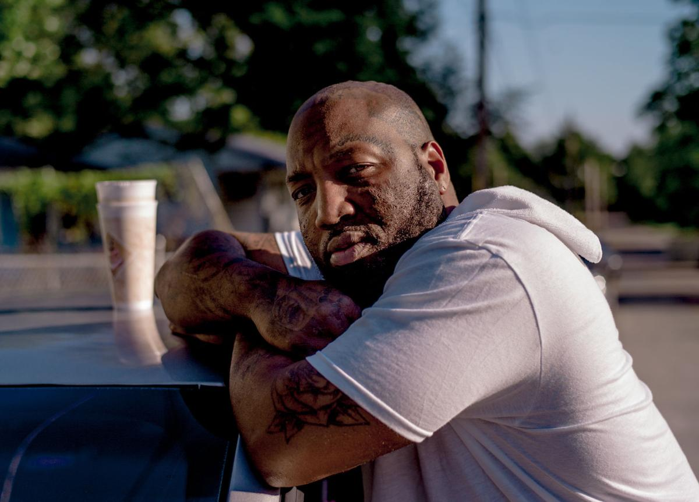
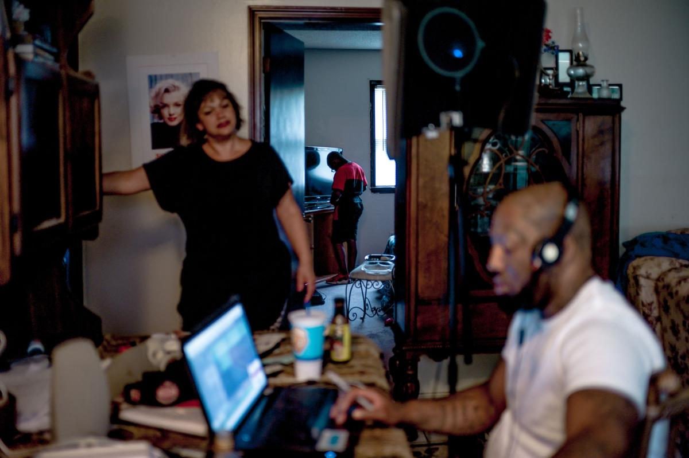
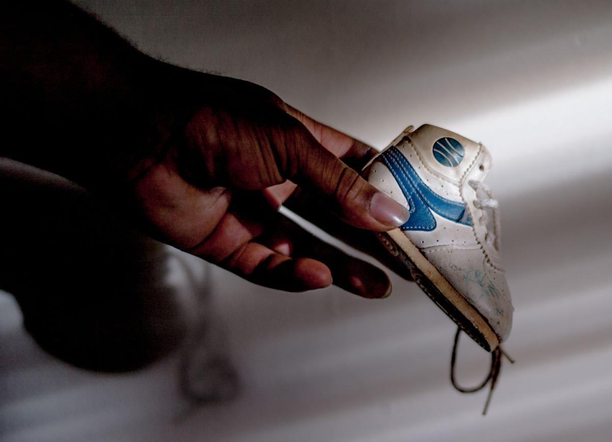
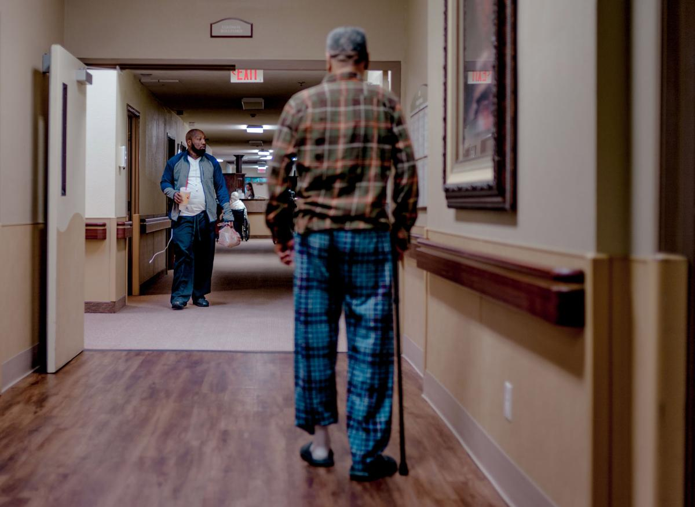

Taking a moment from cleaning the kitchen and making evening plans, Kelin Cobbins calms down his daughter Ka'Myarh on the afternoon of Aug. 12. "She loves to dance to the music," he said. "Any music will do."
Kelin Cobbins
Kelin Cobbins has his mind set on the Los Angeles music industry. Whether producing his own freestyle songs or curating a thematic album about his childhood and roots, Cobbins is determined.
"I eat, sleep, listen to music and go to work so I can make music and get to LA," Cobbins said. "I need to live there and just breath music."
Being raised by his grandmother and uncles in Columbia, Cobbins says he feels an anchor in his hometown. When he drives around Columbia, he says he feels "a feeling of love and life."
Cobbins constantly surrounds himself with the essence of music and searches for a new edge to his music through rising artists, local performances and more mainstream music.
While working the night shift at a local nursing home and taking care of his children who often come to Columbia to visit, Cobbins has a full plate. Although he was born in Columbia and raised by various family members around town, all Cobbins can think of is the west coast.

After the night shift at a local nursing home, Kelin Cobbins poses for a portrait against his car as the sun rises on Aug. 1 outside his grandmother's house where he was raised. "This house has so many memories," he said.

As his son Kellin Jr. counts money in his bedroom, Kelin Cobbins and Nita Ramirez, left, discuss movies to watch on Aug. 31 after Cobbins finishes his new song. Cobbins begins creating his songs by writing ideas in a spiral notebook and playing varying genres of music

Kelin Cobbins holds his old baby shoe, the only artifact of his childhood he has, on Aug. 12 in his home. "My mom didn't keep anything, but this shoe is always here," he said.

Kelin Cobbins walks towards to a staff-only hallway to clock out of work at 6 a.m. on Aug. 15 after his shift at a local nursing home taking care of residents. Upon leaving work, Cobbins immediately went to refill his tires with air and then went home to sleep.